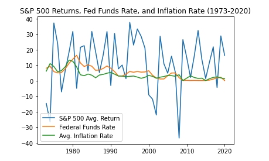

Investing in US Treasury Bonds
Published on April 1, 2023
Definition and Terminology of Bonds
A bond is a fixed-income security that represents a loan made by an investor to a borrower. The borrower could be a government, corporation, or other entity. In exchange for the loan, the borrower agrees to pay the investor a fixed rate of interest, known as the coupon rate, for a specified period of time. At the end of the term, the borrower repays the principal amount of the loan.
Some important bond terminology includes:
- Coupon rate: The fixed rate of interest that the borrower agrees to pay the investor.
- Maturity date: The date when the borrower must repay the principal amount of the loan.
- Yield: The rate of return on a bond, taking into account the coupon rate and the bond's market price.
- Bond rating: A measure of the creditworthiness of the borrower, assigned by credit rating agencies.
Why Investors Should Consider US Treasury Bonds in Times of High Inflation
US Treasury bonds are considered a safe haven investment because they are backed by the full faith and credit of the US government. This means that the likelihood of default is low, making US Treasury bonds a relatively low-risk investment.
In times of high inflation, US Treasury bonds can also provide a hedge against inflation. This is because the coupon rate is fixed, so the investor is guaranteed a fixed rate of return even if inflation rises. This makes US Treasury bonds an attractive option for investors looking for a safe investment with a predictable return.
Cautionary Measures When Investing in Bonds
While US Treasury bonds are generally considered a low-risk investment, there are still some cautionary measures that investors should take:
- Understand the risks: While US Treasury bonds are considered safe, there is still a risk of default or inflation eroding the value of the investment.
- Diversify: It's important to diversify your portfolio to reduce risk. This means investing in a variety of different asset classes, not just bonds.
- Consider the impact of interest rates: When interest rates rise, bond prices fall, so investors need to be aware of the impact of interest rates on their bond investments.
Short vs. Long Maturity Bonds
Short maturity bonds typically have a maturity of less than 5 years, while long maturity bonds have a maturity of 10 years or more. Short maturity bonds are less sensitive to changes in interest rates and inflation, but they typically offer a lower yield. Long maturity bonds are more sensitive to changes in interest rates and inflation, but they typically offer a higher yield.
Investors need to consider their investment goals and risk tolerance when deciding between short and long maturity bonds.
List of US Treasury Bond ETFs
- iShares 20+ Year Treasury Bond ETF (TLT)
- Vanguard Long-Term Government Bond ETF (VGLT)
- SPDR Portfolio Long Term Treasury ETF (SPTL)
- iShares 7-10 Year Treasury Bond ETF (IEF)
- Vanguard Intermediate-Term Government Bond ETF (VGIT)
Investors should do their own research and consult with a financial advisor before investing in any US Treasury Bond ETFs.
US Treasury Bond Research
Let's start with actual data
| Year --- | S&P 500 Avg. Return | Federal Funds Rate | Avg. Inflation Rate |
|---|---|---|---|
| 1973 | -14.66 | 8.03 | 6.16 |
| 1974 | -26.47 | 9.32 | 11.03 |
| 1975 | 37.20 | 5.87 | 9.14 |
| 1976 | 23.84 | 5.06 | 5.74 |
| 1977 | -7.18 | 5.29 | 6.50 |
| 1978 | 6.56 | 7.69 | 9.00 |
| 1979 | 18.44 | 11.20 | 13.29 |
| 1980 | 31.74 | 13.87 | 12.52 |
| 1981 | -4.91 | 16.39 | 8.92 |
| 1982 | 21.55 | 11.43 | 3.82 |
| 1983 | 22.56 | 9.13 | 3.22 |
| 1984 | 6.27 | 10.23 | 4.30 |
| 1985 | 31.73 | 9.33 | 3.55 |
| 1986 | 18.67 | 6.68 | 1.91 |
| 1987 | 5.25 | 6.86 | 3.66 |
| 1988 | 16.61 | 7.91 | 4.08 |
| 1989 | 31.69 | 9.48 | 4.83 |
| 1990 | -3.10 | 8.03 | 5.39 |
| 1991 | 30.47 | 5.87 | 4.23 |
| 1992 | 7.62 | 3.03 | 3.03 |
| 1993 | 10.08 | 3.02 | 2.94 |
| 1994 | 1.32 | 4.28 | 2.61 |
| 1995 | 37.58 | 5.96 | 2.81 |
| 1996 | 22.96 | 5.44 | 3.00 |
| 1997 | 33.36 | 5.96 | 2.34 |
| 1998 | 28.58 | 5.53 | 1.55 |
| 1999 | 21.04 | 5.65 | 2.19 |
| 2000 | -9.11 | 6.41 | 3.38 |
| 2001 | -11.89 | 3.53 | 2.83 |
You can easily generate this list to 2020 using Chat-GPT. Let me know if this is of interest and I will update the table.
If you compute the table into a graph, it is as follows:
If you compute the correlation coefficients between each column, the coefficient between S&P Avg Return and Federal Funds Rate is 0.04.
If you compute the correlation between Federal Funds rate and Avg inflation rate, it is 0.7.
Hence, in a situation where inflation is high, but is lowering, Federal Funds Rate will also decrease.
Since Federal Funds Rate and Bond Price have a negative correlation, we can expect the Bond Price to increase.
Here is a graphical depiction with regards to 20-year US Treasury Bond price and yields. Although, yields is a bit different from Federal Funds Rate, it will still depict a good picture.
In conclusion, if inflation lowers, dividend yield / federal funds rate will lower, bond price will increase.
According to the two graphs, we can expect the increase in price to be around 20%.